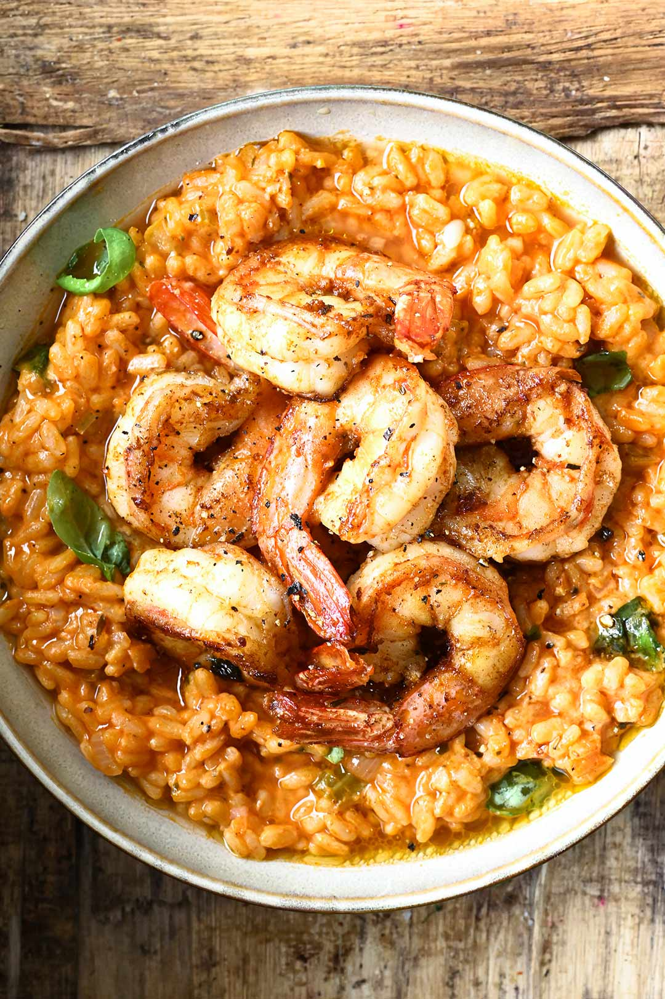

Shrimp Rizzoto Recipe

Ingredients
- 2 xícaras de arroz arbóreo
- 300 gramas de camarões limpos
- 200 mililitros de vinho branco seco
- 1 cubo e meio de caldo de legumes
- 1 litro de água fervente
- 1 tomate em cubinhos
- 2 dentes de alho espremidos
- 2 colheres de sopa de azeite
- Meia cebola picada
- 1 colher de sopa de manteiga
- 2 colheres de sopa de queijo parmesão ralado
Suco de meio limão
- Sal a gosto
- Manjericão a gosto
Instructions
- Tempere os camarões com sal, limão e um dente de alho.
- Em uma panela, aqueça uma colher de azeite e refogue os camarões por cerca de 5 minutos. Reserve.
- Em outra panela, aqueça o azeite restante e refogue a cebola e o alho que restou. Depois, acrescente o arroz, mexa e adicione o vinho, mexendo sempre.
- Dissolva o cubos de caldo em água e acrescente na pasta. Continue a mexer.
- Em seguida, junte os camarões, o tomate e o manjericão.
- Desligar a panela e, depois, misture a manteiga e o queijo parmesão ralado.
- Sirva em seguida.